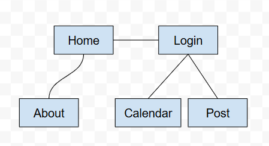

Do-It Do-It-Done
Preston Murray
Date: 11/02/25
Project Name: Do-It Do-It-Done
Project Overview
Describe your proposed website. Must include the following information:
Describe your application and its purpose: This application will be used for groups and/or individual students who need an easier way to keep track of what assignments they have.
Intended users of the website: Students who struggle with time-management.
Overview of the content of the website: This site will have a home page, about page, calendar, as well as a page to login and post their study plan and/or calendar.
Client Information
Name of the client: Jake Halbach
Organization/Institute/Business the client/s are associated with: UNC Charlotte
Client’s valid email address: jhalbach@charlotte.edu
Client’s phone number: [private]
Site Map
Before you start coding, you need to understand what pages you will need to create and how you will navigate between them. Below is an example of a site map. Please produce a site map for your application (you can use https://www.gloomaps.com/ or something similar).
Page Design [Home]
The name of the page: Home
Purpose of the page: To introduce this calendar and planning website.
Audience/Users of page (customer, admin, etc.): Students/people who haven’t logged in yet (everyone).
What will be content of the page? This page is designed mainly to link to everything else: Login and About, which lead to Calendar and Post. It will have a short blurb about the page, however, most of the information will be in the specific about page. No data should be entered on this page, so no validation is needed here.
Page Design [Login]
The name of the page: Login
Purpose of the page: To allow users to log in.
Audience/Users of page (customer, admin, etc.): Anyone who wishes to create a study plan and map out when they should complete certain assignments (customer and admin).
What will be content of the page? Data will be managed here, with a login function that requires validation. When the user logs in, they will be taken to the “Post” webpage.
Page Design [Post]
The name of the page: Post
Purpose of the page: To allow users to create a study plan based on a calendar, showing when they should complete certain assignments.
Audience/Users of page (customer, admin, etc.): Anyone who needs to create a study plan (customer).
What will be content of the page? This page will be the most complex, allowing users to interact with a calendar and put down what assignments they must get done. These will need validation for when they are posted to the overall page. Anything posted should be saved and added to the calendar.
Page Design [About]
The name of the page: About
Purpose of the page: To give the user an understanding of what this site does.
Audience/Users of page (customer, admin, etc.): Browsers, who are curious about the site and how it works.
What will be content of the page? This page will have no data entries, and the only links will be to the home page and login page.
Page Design [Calendar]
The name of the page: Calendar
Purpose of the page: To allow the user to actually see what they have to do, after information they provide on the post page.
Audience/Users of page (customer, admin, etc.): Customers.
What will be content of the page? This page should be relatively simple, just displaying information in an organized way. There should be a link to the post site.
Dynamic Functionality on the Website
Describe the dynamic functionality you will implement using JavaScript:
The largest, most important aspects are the calendar and form on the post page. The calendar will be something similar to the Canvas calendar (https://instructure.charlotte.edu/calendar), but should be a bit more in-depth, showing times and events. It should also give a description (if one was provided) of each item on the calendar. The form should be accessible and easy to use, requiring things like a day and title, along with optional things such as description, time, place, steps, etc.